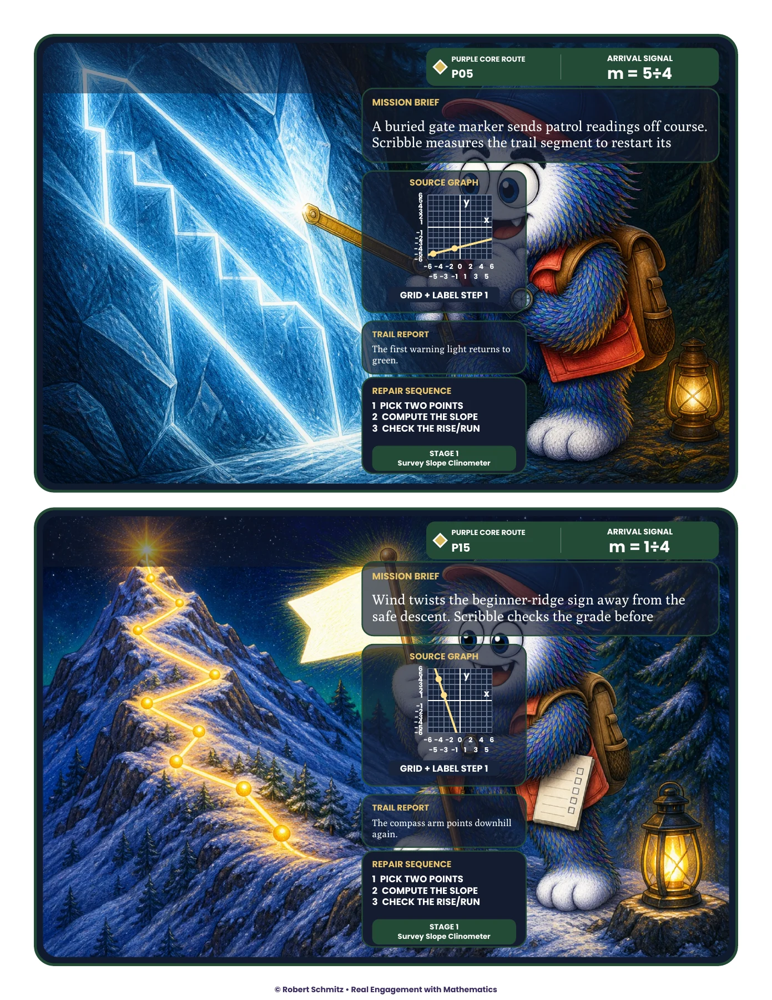
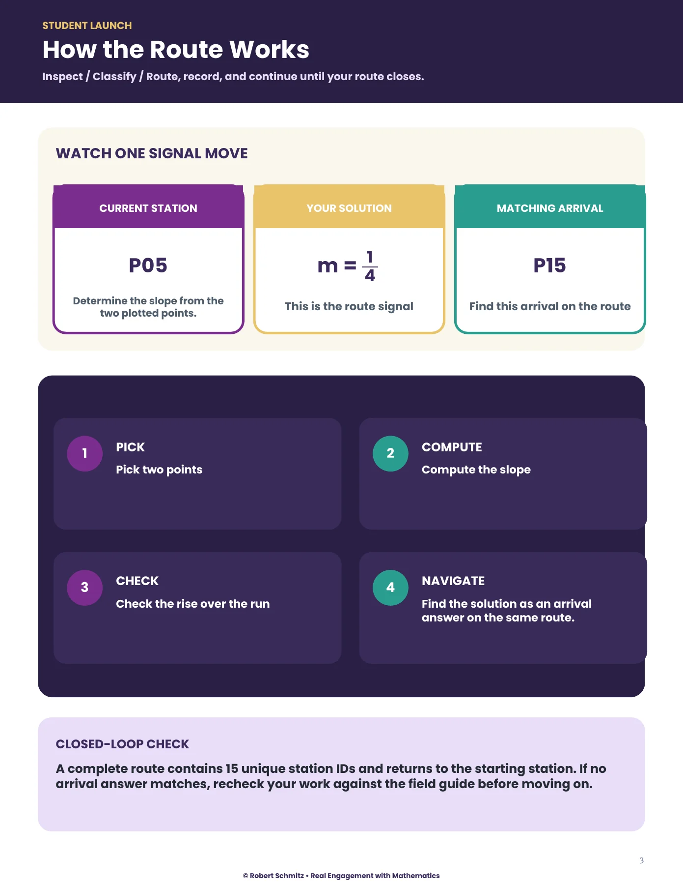
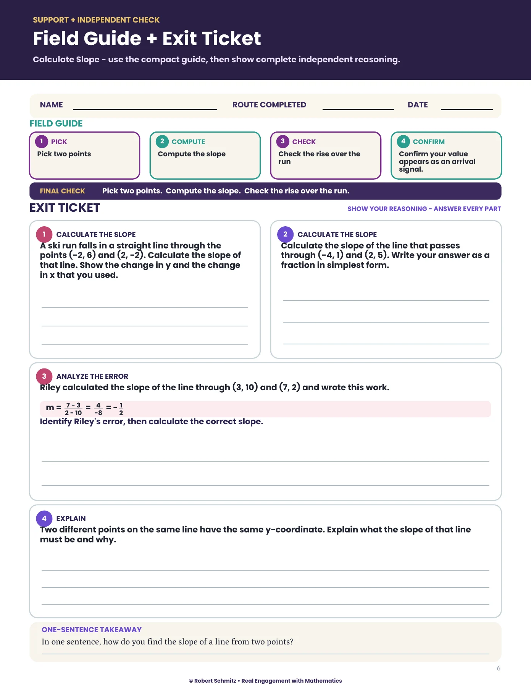
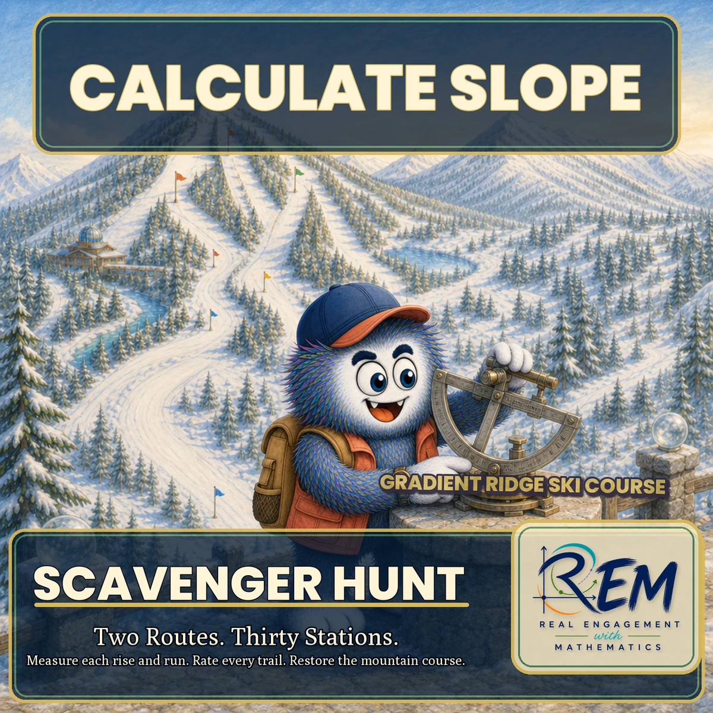

{kind=link}
{kind=link}
{kind=link}
Make navigation depend on the mathematics
The answer provides the next-station cue. A recording sheet preserves the calculation and route choice so a learner or teacher can retrace a wrong turn.
Scavenger hunt · Two connected routes
Slope Patrol Calculating slope
At Gradient Ridge, a calculated slope becomes the signal that sends the patrol to its next station.
Explore the actual materials ↓The learner experience
A ski-course mystery turns slope practice into a route through illustrated stations. Learners identify points, calculate slope, and follow a matching signal. Purple Core and Teal Extension routes give the activity two distinct paths.
Choose the points and inspect the graph representation.
Show the slope calculation and check its sign or special case.
Record the answer and move to the station with the matching arrival signal.
Inside the resource
Selected pages from the actual resource files. Open any page to inspect the details.

Full-color student resource, page 7, with revised panel placement. Illustrated stations pair graph tasks with answer-dependent navigation.

Student resource, page 3. A worked route example introduces Pick, Compute, Check, Navigate.

Student resource, page 6. A field guide and exit ticket keep support and independent evidence in view.
Why I designed it this way
The answer provides the next-station cue. A recording sheet preserves the calculation and route choice so a learner or teacher can retrace a wrong turn.
A compact field guide supports the routine. The exit ticket asks for reasoning separately, because completing a route alone does not establish individual mastery.

Open the original cover ↗Cover, character & visual identity
This original cover introduces Slope Patrol. The character, palette, and visual theme give the resource an identity; the student pages and teacher support show how the activity works.
 Explore the classroom design collection →
Explore the classroom design collection →Evidence & next evaluation
These authored materials show the activity structure and design decisions. Learner outcomes have not yet been measured for this case study.
Watch where learners misroute, inspect their recorded calculations, and compare route performance with the independent exit ticket.
{kind=link}